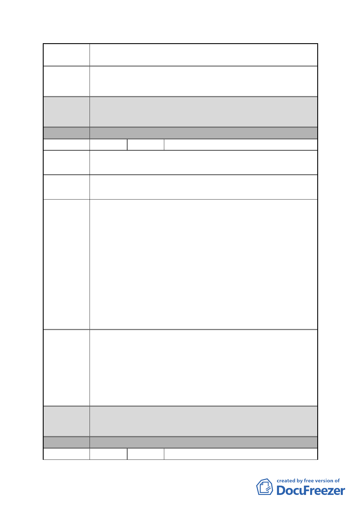

案 名 擬定臺北市南港區鐵路地下化沿線土地細部計畫案
市府回應 同編號 7。
說明
都委會 1.本陳情地點非屬修正後細部計畫範圍。
決議 2.同意以市府回應說明辦理。
分區
編號
陳情地點
E區
19 陳情人 交通部鐵路改建工程局
南港車站站區暨周圍地區
陳情理由
建議辦法
市府回應
說明
都委會
決議
1.該計畫書內圖一～圖六及附圖 2 所標示之區塊 E，實際上需
扣除已施作之南港車站站體隧道範圍，故該計畫範圍 E 其面
積約僅有 4,800 ㎡非該計劃書第 24 頁所述之 1.08 公頃，是
否足敷施作轉運站建請都發局考量。
2.公展計畫第 8 頁（第二段）南北道路如東新街、昆陽街、向
陽路、興華路與興中路，銜接東西向主要道路形成棋盤式路
網；其中興華路即為站區道路 C，於南港車站都市設計審議
時議定未來僅供行人使用，汽、機車將無法藉由南港車站站
區計劃道路 C 直通忠孝東路七段；另鐵路地下化新生廊帶之
景觀道路位於南港車站站區範圍之路段（站區計劃道路 B～
D 之間，即自南港路 2 段 38 巷～興中路間）於南港車站都
市設計審議時建議劃定為公車專用道，其他車輛不得進入。
1.有關面積範圍有誤部分，已於主要計畫配合修正，僅將區塊
E 之南側（面積約 4895 平方公尺）變更為轉運站用地。至
於 E 區未來開發方式或剩餘之土地面積是否足供使用之部
分，係由本府交通局主政，並委外辦理相關規劃。
2.另本府認為南港地區整體路網分佈仍近似棋盤式路網，將配
合修正圖五、交通運輸系統示意圖，至於文字之部分則無需
修正。
1.本陳情地點屬修正後細部計畫範圍。
2.同意以市府回應說明辦理。
分 區 F區
編號
20
陳情人 蔡錫圭
- 29 -